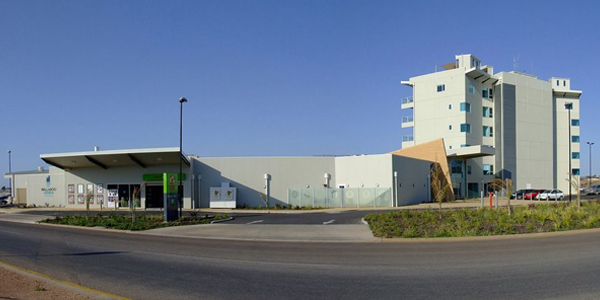
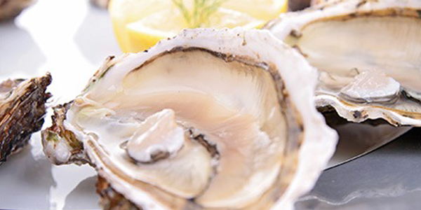
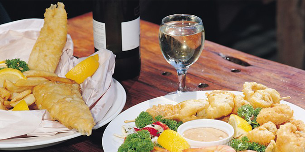
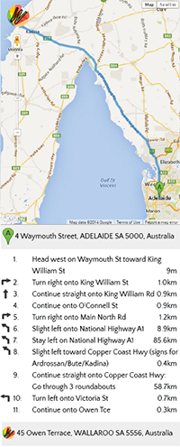

Nightfall at Wallaroo Bay

Coopers Alehouse Restaurant

Finest Coastal Cuisine

Hooked on Fish and Chips
Cruise on the Sea SA Ferry
Welcome to Wallaroo
Widely known as South Australia’s leading seaside resort, Wallaroo has all the amenities of a coastal paradise: boating, fishing, beaches, walks and a relaxed atmosphere. It’s the destination for having fun and unwinding by the water. Wallaroo’s vibrant community also preserves the past, thrives for the present and is developing for the future.
The historic town takes pride in its rich industrial and maritime heritage. It had once been the second busiest port in South Australia for export of locally mined and smelted copper. Now fascinating sights remain, along with a newly developed marina, which are both to be explored and enjoyed.
Wallaroo is 160km north of Adelaide, on the east coast of Spencer Gulf. |

|
Follow the map above or click below to get directions via Google Maps. |
|
|